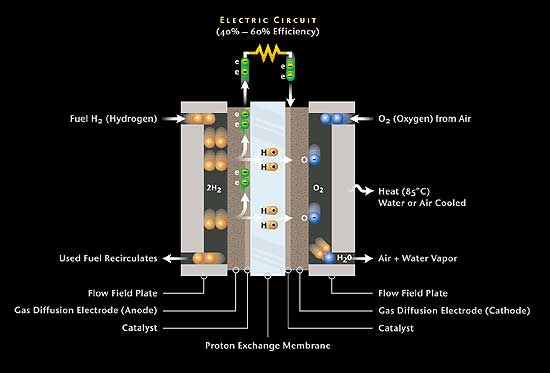

#18449 1 2007-12-18T15:05:30Z Dead_N 2007 is coming to an end. Was it just another boring year? I don't think so. Hasn't anyone layed stress on the fact that 2007 is a warning? That global warming is really an emergency? In this year, the north pole's ice melted at an alarming rate, almost 50km of ice has been melted in the north pole. The sea levels are rising, people are dying and cities are suffering harsh climate changes, yet we continue to burn fossil fuels and drive pollution emitting vehicles? Don't we care about our beloved earth? Is this a minor problem or a major one? Is this worth ignoring or worth fixing? Haven't you witnessed some climate changes in your home country?
")
Let's discuss...

#390674 2 2007-12-18T15:09:21Z epigone Well, it took longer for Winter to get here. Where's the problem again?
#390676 3 2007-12-18T15:18:45Z Dead_N Well, it took longer for Winter to get here. Where's the problem again?
I was referring to people like you when i wrote all that stuff.
BTW im NOT an environmental freak, gathering in groups for strikes and shouting "Save the earth! Save the earth!" over and over again. Its just too dumb, but we atleast have to take it into consideration.
#390677 4 2007-12-18T15:21:13Z astro Dead_N, I think you often misinterpret the subtext of people's posts and take things too seriously/are overly pessimistic.
#390678 5 2007-12-18T15:26:02Z Dead_N What? No im not taking things that seriously. Were you warning me or something? Ok, I understand

#390679 6 2007-12-18T15:35:13Z astro No, no, I'm not warning you. I'm mentioning this completely outside my capacity as a moderator. Epigone was being rather flippant and by your comment it sounded like you were taking him totally seriously.
#390719 7 2007-12-18T19:35:14Z black_tetris Whilst I don't fully believe everything that dudes say, I am terrified to have children because I'm certain that we're having a huge and negative impact upon the world. And if I'm right in that, we're *entirely* too far along to reverse or stop our impacts. Not to be a nihilist, but if things are truly as dire as they're being portrayed, we're super-boned.
#390741 8 2007-12-18T20:51:16Z epigone I think most people agree that global warming is a serious issue, just not theirs.
#390923 9 2007-12-19T02:23:49Z Atilla Climate change is a serious issue, but I doubt the results will be as apocalyptic as some people claim.
#391144 10 2007-12-19T18:24:32Z The_Muffin_Man I think the climate change may be a problem, but I think a lot of the fuss is quite silly. I had to play music with rocky anderson about climate change and oil. Last year me and my friend had to rewrite the lyrics to Sweet Home Alabama to be about recycling. I was scarred for life. Most of it is natural, but we are egging it on with pollution. I live in Utah where it's really polluted with the inversions and want it to stop. I believe it's a problem ,but won't cause armageddon.
It is also frustrating when environmental freaks just protest all day and don't try to actually help. They could go out, get an education, and make a filter for car emmisions or invent a car run on soda. Instead they just protest all day.
#391151 11 2007-12-19T19:50:36Z nimrod I think global warming is a serious issue, but I don't think we should all get stressed out about it. Worrying has never solved anything, and there are plenty of scientists working on it.
#391358 12 2007-12-20T03:36:53Z TheSeer It's a real issue, but greatly exaggerated for political gain.
#391363 13 2007-12-20T03:39:01Z astro As with everything, the truth lies somewhere in between the two extremes.
#391383 14 2007-12-20T04:08:45Z Turtle Conference in Indonesia?
Al Gore?
Never heard of them.

edit: it's a big deal and all, but what have YOU done?
#391548 15 2007-12-20T17:55:06Z Implied Quotient My opinion: Global warming has happened, and is happening. We can't easily reverse the damage we've caused, but we
can stop causing damage. Not only is it a major problem that we should be worrying about, but its one that is solvable by each individual. CFLs or fuel-efficient cars or a roof-top solar panel...these may not seem to make much of a difference, but if everyone did it...
We all complain about smog or pollution, but nobody ever does anything. I still see Chevy Suburbans pulling into the local grocery store...it makes me think: if everyone who drives a pickup truck or SUV drove a sedan or carpooled, not only would they save money, but they'd save the environment.
Global warming is a major issue: we all live in the environment, but we don't want to save it...

Now I want to cry.
#391723 16 2007-12-21T01:58:42Z Keron Cyst From what little I know, I really don't think global warming can be attributed to all human resource-exhaust just by correlation (both sides have always been disputed anyways), though it would never hurt to research more efficient solar collectors.
#391748 17 2007-12-21T02:22:52Z iangb I've had two module courses on this now...
It's happening, it's (mainly) our fault and the potential for change is (relatively) huge. Especially if you live in Bangladesh.
On the other hand, it won't be
quite as bad as some people make out to be. But it would be no bad thing if humanity were to take some responsibility for its actions.
On a personal scale... recycle what you can, try to minimise what you throw away, switch off unused power (light bulbs, unused battery rechargers, etc) and attempt to take the greener option if it is available and not too inconvinient. For example, if your computer uses a cathode-ray screen (ie not a flatscreen), use
Blackle instead of Google. It costs you nothing and it might just make a difference.
#391878 18 2007-12-21T10:16:58Z Atilla Blackle? I can't use that AND
Ripple, man!
#391897 19 2007-12-21T13:06:31Z Dead_N I don't know about you guys but i heard there has been a new rule in Australia, something about limiting the number of children, because more children means more carbon dioxide. Anyone fallowing their own rules in giving birth to children will be heavily fined. Wierd huh?

#391904 20 2007-12-21T13:35:25Z ZZ9 
Seriously, that's just strange.

#395057 21 2007-12-31T17:37:36Z shan1392 Global warming is the most serious issue I can think of right now. The ice cap has been melting at a very fast rate and people don't even seem to worry about that at all !
This can cause drastic issues if proper measures arn't taken e.g. extinction of humans! (I kno, Im exagerating, but this is what I heard... weird :S)
oh and the Australia rule is weird.... really REALLY weird. It would be better to stop driving pollution emitting vehicles and burning fossil fuels.
Hydrogen or Alcohol can be used as fuels in cars. But, hydrogen is too expensive (currently) and ppl start drinking up the alochol at petrol stations!
So there's no escape

#395063 22 2007-12-31T18:44:47Z astro I don't know about you guys but i heard there has been a new rule in Australia, something about limiting the number of children, because more children means more carbon dioxide. Anyone fallowing their own rules in giving birth to children will be heavily fined. Wierd huh?
This seems like the kind of the thing that I, as an Australian, would have heard about. I haven't, and I doubt such a thing is on the cards, even though our new government is closer to the left and the Prime Minister speaks Mandarin.
Edit: some brief research reveals that a medical expert here has proposed such a thing. Nothing to do with the government.
Oh, and
Hydrogen or Alcohol can be used as fuels in cars. But, hydrogen is too expensive (currently) and ppl start drinking up the alochol at petrol stations!
The ethanol could probably be mixed with methanol to make it toxic and un-drinkable.
#395325 23 2008-01-01T11:25:50Z shan1392 Really? Tht's good
#395345 24 2008-01-01T13:48:20Z blue_tetris ...
I doubt the threat of people consuming fuel alcohol is valid. They sell rubbing alcohol at stores all the time, and very little if any gets consumed.
#395365 25 2008-01-01T15:32:44Z shan1392 They sell rubbing alcohol at stores all the time
well not at muslim countries...
#395527 26 2008-01-02T00:00:00Z Atilla Not to mention that normal petrol can be sniffed.
#395531 27 2008-01-02T00:11:30Z Cossack either way, even if it was drunk (and i stress even), it would be very small amounts and you would still pay for it, and more than conventional alcohol. its not a major problem.
more on topic, i believe in recycling and all that jazz as long as its within reason and ease of use, but i dont see global warming as that serious an issue. its been contributed to by humans but its happened before (a lot slower. the speed is due to humans) and so have the opposite (ice ages). in a nutshell: problem, but there are others more important ones at hand
#395626 28 2008-01-02T03:00:08Z >stardeash Climate change is a serious issue, but I doubt the results will be as apocalyptic as some people claim.
I agree, it's not like something really really terrible will happen like an explosion.
#395888 29 2008-01-02T23:04:50Z Knock Me Sideways Global Warming is just as serious as my drinking problem. But can we do anything to stop it? No, I don't believe so. No matter how many people you tell to recycle, carpool, and all these things...It's not going to make a difference. You can't affect four billion people. Even with a movie, it just scares people. What do people do when they're scared and know everyone else is too? They run and hide. Shut themselves off.
I'm not saying EVERYONE does this, but a bigger population than the ones that don't, do.
#395900 30 2008-01-02T23:37:34Z Topolord I think rubbing alcohol is generally isopropyl alcohol, whereas drinking alcohol (aka alcohol that you can drink without going blind) is ethanol. however, I don't quite see someone drinking alcohol from a gas station just becuase you
can.
But, hydrogen is too expensive (currently)
Actually, hydrogen makes up about 74% of the universe. (I think; don't quote me on that.) By all rights, it should be cheaper than dirt. However, it costs something to get hydrogen out of the compounds it is stored in. (i.e. water, carbohydrates.) The easiest method right now is electrolysis of water, which yields water and hydrogen. This can be done easily in large quantities using relatively simple machinery. Once the hydrogen has been captured, it can be transferred to a hydrogen fuel-cell car where it reacts with oxygen in the air over a catalyst to produce water -- and energy.

We already have all the technology necesary to do this. the only real problem is putting hydrogen producing machines in just about all gas stations nation, or world, wide.
I see this as by far the easiest way to reduce pollution in a meaningful way. Of course, this system still requires electricity, but it comes entirely from the grid, meaning that although in an ideal system, it would change nothing, it helps becuase individual cars cannot be as efficient as large power plants. excepting coal plants. which are bad. And, of course, putting all the power from cars on the grid would increase the impact of alternative energy power sources such wind, geothermal, tidal, and solar. Solar energy makes the most sense of course, becuase just about all energy on the earth comes from the sun. bypassing conversions, such as solar to plant matter to oil or ethanol, would be a great help. Of course, tidal energy is the result of gravitational energy. I'm not sure what research has been done into gravity as a source of energy beyond tidal though. maybe some kind of satellite that generates power by being pulled between different planetary bodies. like part a gets pulled towards the sun more, part b gets pulled more towards the earth, etc.
...
>_>
/me mumbles off somewhere.
#396762 31 2008-01-04T19:51:08Z shan1392 wow, tht is quite informative. I didnt kno most of the stuff...
#397322 32 2008-01-05T19:22:17Z eternal_moonlight I Beleve in global warming. But I stillbthink more study is needed
#397339 33 2008-01-05T20:29:49Z Commander there's nothing to discuss
humans are screwing the world over, and have to stop or else we'll all die
simple as that
#397973 34 2008-01-07T00:09:48Z Aesalonis well were all gonna die at some point anyway so whats the problem?
#398023 35 2008-01-07T00:56:56Z scythe33 ...
I doubt the threat of people consuming fuel alcohol is valid. They sell rubbing alcohol at stores all the time, and very little if any gets consumed.
http://en.wikipedia.org/wiki/Denatonium
Isopropyl alcohol is about twice as strong as ordinary alcohol, and has different psychological effects. Given those considerations, the bottle I have in my bathroom is 360 proof. Only methanol causes blindness-it's metabolized to formaldehyde.
And yes, gasoline can be sniffed.
In my opinion, both butanol and dimethylfuran make much better candidates for gasoline replacements than does simple ethanol. Dimethyl ether is an even better candidate, because it can be used in diesel engines. However, like all ethers, it's possible for it to form peroxides and cause explosions.
A carbon-free fuel like ammonia would of course be much better, but ammonia is a gas, hydrazine is explosive, and ammonium nitrate is a solid.#398048 36 2008-01-07T01:30:49Z Cossack not to mention that ammonia is highly dangerous to humans.
#398138 37 2008-01-07T03:04:51Z Heartattack the earths temperature gos through phases; during the time of the dinosaurs, it was very tropical, then there was an ice age, now we live in fairly temperate climates. maybe we are just moving towards our next global climate phase.
#398144 38 2008-01-07T03:09:10Z Turtle well were all gonna die at some point anyway so whats the problem?
Do you care about your kids? Do you care about their kids? Do you care that there will be NO MORE FISH? Fish are awesome! How could you live getting rid of the fish?

#398153 39 2008-01-07T03:25:56Z blue_tetris If there's a world left when I'm dead, I didn't use enough of it.
#398169 40 2008-01-07T03:48:31Z Turtle If there's a world left when I'm dead, I didn't use enough of it.
So I suppose you are one of the people who actually doesn't care about the future generations?
#398170 41 2008-01-07T03:49:59Z Pepi If there's a world left when I'm dead, I didn't use enough of it.
God. That is so incredibly ignorant... nothing personal.
#398175 42 2008-01-07T03:55:46Z Knock Me Sideways If there's a world left when I'm dead, I didn't use enough of it.
God. That is so incredibly ignorant... nothing personal.
How is it ignorant? I think you mean arrogant.
#398177 43 2008-01-07T03:57:55Z Tapp If there's a world left when I'm dead, I didn't use enough of it.
With that opinion, you should make that assholier than thou part of your sig bigger and more noticable. Also, new fuels aren't a solution. Hydrogen is a dead end because it takes more energy to make than it exerts (the law of energy conservation), so the only use would be a supply found on another planet, which would absorb all of the oxygen in the air. I try to do my part, and it's not very hard. Just switch things off at the powerpoint whenever possible (rather than putting them on standby) and you can make a difference. Every day my mum and I walk down to the local shops to pick up groceries, which drastically reduces our carbon footprint and keeps us fit. I've got about 1100 shares in geodynamics, and I use solar panels to run lights outdoors. It can also recharge my psp every month, which is a help. We've got a gas fireplace too, which though still making CO2, makes a lot less. I switch lights out whenever not using them, and all of our light bulbs are compact halogen too. These small things can save money, and they're good for the environment. I'm not the crazy environmentalist type, but there's no denying it, be it systematic warming or global warming. Besides, it can save you some major money.
#398181 44 2008-01-07T04:02:15Z Turtle If there's a world left when I'm dead, I didn't use enough of it.
God. That is so incredibly ignorant... nothing personal.
How is it ignorant? I think you mean arrogant.
Ignorant suggests ignoring. Arrogant suggests arrogance. I vote both...
#398182 45 2008-01-07T04:04:37Z astro If there's a world left when I'm dead, I didn't use enough of it.
With that opinion, you should make that assholier than thou part of your sig bigger and more noticable. Also, new fuels aren't a solution. Hydrogen is a dead end because it takes more energy to make than it exerts (the law of energy conservation), so the only use would be a supply found on another planet, which would absorb all of the oxygen in the air. I try to do my part, and it's not very hard. Just switch things off at the powerpoint whenever possible (rather than putting them on standby) and you can make a difference. Every day my mum and I walk down to the local shops to pick up groceries, which drastically reduces our carbon footprint and keeps us fit. I've got about 1100 shares in geodynamics, and I use solar panels to run lights outdoors. It can also recharge my psp every month, which is a help. We've got a gas fireplace too, which though still making CO2, makes a lot less. I switch lights out whenever not using them, and all of our light bulbs are compact halogen too. These small things can save money, and they're good for the environment. I'm not the crazy environmentalist type, but there's no denying it, be it systematic warming or global warming. Besides, it can save you some major money.
You mean the law that says energy cannot be created or destroyed, only changed form? What does that have to do with the viability of hydrogen? (which no-one is actually calling an energy source, it's a carrier.)
Edit:
Ignorant suggests ignoring. Arrogant suggests arrogance. I vote both...
Considering it's blue_tetris speaking, it's not ignorance.
#398197 46 2008-01-07T04:30:34Z Turtle Considering it's blue_tetris speaking, it's not ignorance.
...I suppose, in a sense...
I feel that it is rather rude, though.

#398198 47 2008-01-07T04:43:02Z scythe33 Sarcasm Alert! Sarcasm Alert!
Sarcasm has been detected in the thread!
Evacuate!
Beep! Beep! Beep! Beep! Wee-woo! Wee-woo! Wee-woo! Honk! Honk! Honk! Honk! Honk!
...
I'm pretty sure Dave was messing with you, guys.
Hydrogen is a dead end because it takes more energy to make than it exerts
Via chemical reactions? Of course. Via muon-induced fusion? At the moment, but perhaps not in about twenty years.
In either case, nobody was suggesting hydrogen become our energy source. Hydrogen, typically in the form of sodium borohydride, is a candidate for energy storage, as are barium titanate supercapacitors.
And something does in fact need to be done-simple conservation is not enough given the rapidly expanding population, unfortunately.
Presumably, if we stop producing too much carbon dioxide and methane, levels will drop back to the old equilibrium, where we'd like them to be. #398208 48 2008-01-07T05:16:02Z Tapp Now that use of Hydrogen is useful. In fact, the nuclear side of hydrogen is what powers the sun (don't tell anti-nuclear activists


). I was just saying, it's at least a difference, and that could give us an extra couple of years to switch to geo-thermal if we were all to do that.
~EDIT~ woah, turtle posted at the same time.
#398209 49 2008-01-07T05:16:09Z Turtle I'm pretty sure Dave was messing with you, guys.
I hope so. I'm not a very good speaker/debater online...
#398361 50 2008-01-07T16:41:43Z blue_tetris Wait, wait. I was called ignorant? How is it ignorant to understand the solipsism of my world and act accordingly? Arrogant is probably more like it.
I think people direly want to believe that when they pay out to some group or organization they'll be compensated for their costs in some fashion. Folks like to think that extra public spending will help the environment is some regard, but they'll be able to notice it within their lifetimes. I fail to believe that any person would act to their own detriment without an expectation of ultimate gain. None of you care to invest into the environment unless you think the investment will pay off in a decade or so.
Come to think of it, most of you aren't doing the investing at all, really. You've got no reason not to pile on the heavy taxation on those with incomes.
Sadly, the organizations which bleed green have been about for decades and decades. Organizations, public and private, have been collecting dollars from the foolish, the extravagant, the idealistic, and even just us folks with incomes. What have we gained from it? Nothing. In fact, nowadays, there's still enough of an environmental problem to put these organizations back to work in fielding money from the public.
Where is this money going? These guys have collected billions of dollars since the mid-60's and there's still a hole in my ozone, pollution in my cities, and shopping malls in my forests. What were my folks paying for in the sixties, seventies, and eighties? What am I paying for now? When do I get my reimbursement?
The truth is: I never do. But because the return on my investment is--as they say--conveniently centuries into the future, they'll never have to pay me back. They can put the money into other things, most typically corporations whom your average hemp-sandled hippie thinks is getting screwed over by the process.
You really want to help the environment? Don't hand your money to someone. Save your own energy, cut down on your own consumption, stop buying cars that damage the environment--to make money, those corporations will need to create products that suit the needs of the environment. If you're so intent on being idealistic, don't force the public en masse to hand their money around to organizations; do your own part, and if you really care to, donate your own money to charities that you think are trustworthy.
#398838 51 2008-01-08T19:50:29Z Aesalonis blue tetris is exactly right (as usual

) i hate people like bob geldof and bonno who dont really care for the environment. Truthfully who cares? Most people only bring up this subject to make them look caring but they still drive around in theyre big 4x4's to get down the street to see a friend. I don't get it. I turn off lights and all that **** just to save money and thats it but then we have the ones who thrive on attention these big superstars show up in private jets and transported in humvee limos. I'm not saying this is what directly causes it but then you get the people who want to be like the superstars so they drive round in theyre 4x4's to look cool but no one seems to give two shits when they dont save the world. I dont turn off the lights and someones chapping at my door talking about global ******* warming! The only reason people really care about it is the media attention towards this. It just seems like when i do something to help the environment someone else goes by in theyre car. It all seems pointless. How am i meant to save the environment when some tit is revving up his car for no apparent reason. As i say it is pointless in the long term. People may say that global warming is a myth and on the other hand it isnt a myth at all. Who am i to believe oh wait i dont care. The only thing that really matters is that i'm saving some money each month by flicking off a few switches and thats all that matters.
#398885 52 2008-01-08T23:17:37Z Tapp Via muon-induced fusion?
Muons are the result of pions that have decayed, they have no way of binding particles. Anyway, on topic, it's not all that hard to switch to wind or solar energy (particularly when carbon credits are enforced) and/or get an electric car. This could influence others, and potentially make hummers and private jets a lot less popular.
#399287 53 2008-01-10T02:08:31Z rocket_thumped I don't know why you people care so much about the earth. You only live on it for 80 something years, that's a second in its life time. You won't see it again, the fact is, those 80 years is all you have. Why should you care what it is like in future generations? They won't thank you for protecting their sacred earth. And by the time it actually makes a difference it'll be several generations, you would have never known them and you certainly can't care about them. Maybe the only way not to care about global warming is to realize that the earth is only here for as long as your alive on it. The fact is, you will die on the earth long before it dies on you.
#401676 54 2008-01-17T22:54:07Z Bullet94 I don't know why you people care so much about the earth. You only live on it for 80 something years, that's a second in its life time. You won't see it again, the fact is, those 80 years is all you have. Why should you care what it is like in future generations? They won't thank you for protecting their sacred earth. And by the time it actually makes a difference it'll be several generations, you would have never known them and you certainly can't care about them. Maybe the only way not to care about global warming is to realize that the earth is only here for as long as your alive on it. The fact is, you will die on the earth long before it dies on you.
Well the thing is what about our children? I want to die knowing my kids will be safe as opposed to me dieing and them drowning shortly after.
#401700 55 2008-01-18T00:50:06Z DemonzLunchBreak Muons are the result of pions that have decayed, they have no way of binding particles.
Do you mean to say that
muon-catalyzed fusion is impossible?
#401716 56 2008-01-18T01:36:05Z Arona Daal Don't freak out and yell at people with differing views if you have absolutely no idea what your talking about. (If you do have an idea what your talking about please do not take offense) You simply can't walk around telling people to stop driving their cars. You also can't tell people that their ignorant. The world goes through phases, as someone said before in this thread (thank you), and what is happening to the world is perfectly natural. We may be helping the process a little by burning holes in the ozone, but mankind does not have the power (yet) to significantly alter the life of a planet. In the meantime, I'm not going to move into a cave and hunt deer for a living just because Al Gore is spewing hipocritical bullcrap about the environment to further his career.
#401717 57 2008-01-18T01:36:05Z Arona Daal Don't freak out and yell at people with differing views if you have absolutely no idea what your talking about. (If you do have an idea what your talking about please do not take offense) You simply can't walk around telling people to stop driving their cars. You also can't tell people that their ignorant. The world goes through phases, as someone said before in this thread (thank you), and what is happening to the world is perfectly natural. We may be helping the process a little by burning holes in the ozone, but mankind does not have the power (yet) to significantly alter the life of a planet. In the meantime, I'm not going to move into a cave and hunt deer for a living just because Al Gore is spewing hipocritical bullcrap about the environment to further his career.
#401772 58 2008-01-18T10:09:03Z Tapp So it's just coincidence that the temperature has gone through an exponential increase exactly copied but delayed of carbon emissions? The earth may go through phases, but evidence indicates that this is not a phase. It has been done on a small scale, and has proven its worth. Now as for those saying that you don't care for future generations, as long as you get your swell time in, that's the same as being payed $million to kill half the world's population using a nuclear weapon and let the remaining half shrivel up and die slowly and in agony. Now some people in this thread (mostly me) have been very rude and blunt in their statements, but it has to happen soon. Any evidence against it can be disproved, while the effect itself has not had any significant evidence against it. If anybody can give me a reliable case as to disprove global warming, I'll believe you. Go ahead, make my day.
#401780 59 2008-01-18T13:56:48Z ZZ9 ...has gone through an exponential increase exactly copied but delayed of carbon emissions? The earth may go through phases, but evidence indicates that this is not a phase.
It's amazing how relavent those are to SD...
I'll ask you anyway, in case you can't see the image. Where did you get the quoted information?
#401782 60 2008-01-18T14:07:27Z Commander Quote: Arona Daal, January 17, 2008 09:36 pm
Don't freak out and yell at people with differing views if you have absolutely no idea what your talking about. (If you do have an idea what your talking about please do not take offense) You simply can't walk around telling people to stop driving their cars. You also can't tell people that their ignorant. The world goes through phases, as someone said before in this thread (thank you), and what is happening to the world is perfectly natural. We may be helping the process a little by burning holes in the ozone, but mankind does not have the power (yet) to significantly alter the life of a planet. In the meantime, I'm not going to move into a cave and hunt deer for a living just because Al Gore is spewing hipocritical bullcrap about the environment to further his career.
HAHAHAHAHAHA
i laugh at you
but mankind does not have the power (yet) to significantly alter the life of a planet.
hahaha
ok, *chuckle* have you EVER heard of the "atom bomb"?? how bout "bullets"???
there are enough of these "bullets" to kill everyone in the world over, and over, and over. JUST BULLETS, thats not including bombs and other explosives. if man really wanted to , the world could be blown up completely. sure, I'll go for your whole "earth goes through stages" theory, but in 10 years we will have passed the point of no return. this means, we have done so much sh*t to the world that in 10 years, we have no chance of going back, basically, were all dead in 10 years. so I'm not telling you all to stop driving your cars, and I'm not telling you to use only energy efficient light bulbs and whatnot. but if your ok with suicide, i am too
go get your own f*cking planet to screw up
ps. most of the reasons people don't believe things, is because they don't -want- to. so, come up with -real- evidence we aren't screwing the world over, and I'll believe you. until then,
Quote
go get your own f*cking planet to screw up
#401788 61 2008-01-18T15:36:43Z blue_tetris Don't get flamey, kids.
#401798 62 2008-01-18T18:15:47Z scythe33 Via muon-induced fusion?
Muons are the result of pions that have decayed, they have no way of binding particles.
Look, we've been over this. You don't know quantum mechanics.
http://en.wikipedia.org/wiki/Muon-catalyzed_fusion
Okay?
but mankind does not have the power (yet) to significantly alter the life of a planet.
That's why the concentration of mercury in the oceans has gone from harmless to "Don't eat tuna more than once a month", right?
I don't know why you people care so much about the earth.
Evolutionary psychology? Those organisms which did nothing to help ensure the survival of the children produced fewer surviving offspring than those that did. Therefore, they disappeared.
Right, ozone. It's a greenhouse gas.
Say what?
Ozone is a greenhouse gas that absorbs in the atmospheric window. Ozone depletion actually reduces the greenhouse effect. The reason we want ozone in the stratosphere is entirely different: Ozone also absorbs in the ultraviolet spectrum, unlike many other gases, due to I believe 3-center 2-electron bonding. Ozone therefore prevents skin cancer.
Dave, as you've pointed out, short of taking a giant pole and blowing ozone into the stratosphere, there's no way to get it back but to wait for the chlorine in the stratosphere to leave on its own. That's basically true. However, what banning CFC's effectively does is to prevent any further ozone depletion. The ozone hole is over Antarctica. We're not too worried about Antarctica. However, if it gets bigger, we'll see more holes and therefore, more cancer. It hasn't been getting bigger, which I'd call a success.
Solar panels would be nice. As much as I wholeheartedly agree with Dave's arguments that the economy is more powerful than the government, I think the government would have to do something for something like that to happen. Making cheap, effective, reliable solar panels is simply not profitable.
Muon-catalyzed fusion, of course, would be even nicer.
HAHAHAHAHAHA
i laugh at you
I think you're misinterpreting Arona. He's right in saying that Al Gore is a hypocrite for putting on Live Earth while constantly wasting energy (he doesn't even use fluorescent light bulbs).
Speaking of lighting, where are these LED's we've heard hyped so much recently? It seems like every year, the deadline for "energy efficient long lasting LED lighting" gets pushed back another few years. Weren't they supposed to be here a long time ago? Why isn't my room decorated with wonderfully shiny, bright light-emitting diodes?#401807 63 2008-01-18T19:19:49Z blue_tetris I'm pretty sure global warming is proven. I think the real issue is: "Why should we be concerned with it?" It seems like a no-brainer, but if the measures to protect the environment continue as they have for the last several decades, no results will be shown.
Again, investments require returns. If I'm paying for a better world, I should receive one (matching my expenditures) in a timely fashion. Otherwise, it's not a financially wise investment.
#401844 64 2008-01-18T23:12:28Z Tapp I realise that there is no noticable return within our lifetimes, but it's important that people accept it as a truth, and can make a small investment that will pay off much bigger in the future. What do you think would have happened if nobody bothered with the bill of rights, nobody bothered to care about endangered species, and your grandparents never bothered to leave you any inheritance money? What if nobody bothered to fight in any war or stop hitler? Face it, heroes are known for being unselfish, and you have to ask yourself if you would rather continue emitting CO2, or be known forever for being an environmental crusader. You could be the person that bothered.
#401866 65 2008-01-18T23:48:44Z scythe33 I'm pretty sure global warming is proven. I think the real issue is: "Why should we be concerned with it?" It seems like a no-brainer, but if the measures to protect the environment continue as they have for the last several decades, no results will be shown.
Again, investments require returns. If I'm paying for a better world, I should receive one (matching my expenditures) in a timely fashion. Otherwise, it's not a financially wise investment.
Dave, you missed the point. You got what you paid for. You didn't get skin cancer. There's no ozone hole where you live because we're not pumping tons of chlorine into the air. It's like the old fence story. The best you can to for the fence is to stop nailing holes in it, even though you can't do anything about the ones that are already there.
Incidentally, it's the same with global warming. A certain amount of warming at this point is inevitable. We're preventing any more from happening, when it could have serious consequences. And as quickly as you might think you're going to die, if we continue unabated, you could in your lifetime see the effects of that "more". Given emission trends, the West Antarctic Ice Sheet should go in 30 years if they continue. You'll only be 56, Dave. You won't be gone.
Environmentalism isn't healing, it's damage control.#401892 66 2008-01-19T00:39:24Z blue_tetris Actually, I wouldn't have gotten cancer no matter what I paid.
And the reason that we don't pump chlorine into the air is because there's no reason to do so. If it was profitable to do so, we would.
Secondly, I'd love to see citations on:
Given emission trends, the West Antarctic Ice Sheet should go in 30 years if they continue.
...and the statement regarding that I would see the effects of global warming in my lifetime given current trends.
#401907 67 2008-01-19T01:09:02Z Kablizzy As I recall the evidence, the Antarctic ice sheet will fade in 30 years regardless of our efforts. Even if we were to stop driving cars entirely, all six billion of us, and shut down all factories, the rate of decay would remain constant as it is now. As such, even since stopping our current practices entirely won't do anything, then anything short will only be prolonging our collective lifespan by a couple years. So, why Environmentalism? In kind, refining a used napkin into a shiny new napkin isn't going to affect anything, so even if I am around in 30 years, I'm damned if I do, I'm damned if I don't. So I don't. I'm not going to suffer my last couple decades on this planet for everyone else's good. I've been telling people to stop being jackasses my entire life, and no one listens. So, they can all rot and die in obscurity here. As I say, should've thought about it before we went down this road.
#401973 68 2008-01-19T04:51:32Z scythe33 Actually, I wouldn't have gotten cancer no matter what I paid.
Oh, really now?
Let's have a look:

 Now, the second graph is there for the amount of ozone at various altitudes. About 65% is above 20 km, no?
Now, the second graph is there for the amount of ozone at various altitudes. About 65% is above 20 km, no?
Let's play the hypothetical situation where we lose that 40% comfort zone. Now, we're looking at the DNA Action Spectra plus the amount of radiation-both are logarithmic. To simplify things, let's just use the wavelength at which DNA Action spectra intersects the intensity (very rough approximation of the total effect on DNA of the UV). At current levels, we're on the line marked "surface", which ranks about a 2 on the "DNA Action Spectra" and 10^-8 on the intensity, so we have a flux of 2*10^-8. If we lose that 35%, we're on the line marked 20 km. The maximum there ranks about a 4 in DNA action and about 10^-7 in intensity, so we have a flux of 4*10^-7, which is a twentyfold increase in radiation.
Now, melanoma cases occur in the US at a rate of about 60,000 cases a year. If all photons are equal, the rate should also increase twentyfold, to about 1.2 million a year. In seventy years-about a lifetime-that's about 84 million, which means that one in four Americans will get melanoma in their lifetimes.
So let's see when we'd hit that level.
 The Protocol called for the phase-out of CFC's by 1996, so we'll look at the trends up until then. The average of the readings around 1980 was around 300 DU, and the average around 1996 was around 280 DU. A 35% decrease from 280 is 180, so at 10 per 8 years, we'd hit it in 80 years. Of course, that's not the way ozone depletion works; it's catalyzed by CFC's, so the rate of depletion would constantly increase as we used more and more of them. Plus, thanks to CFC's high global warming potential, the stratosphere would be cooled (a surprising effect of global warming), allowing for more holes to develop over more areas.
The Protocol called for the phase-out of CFC's by 1996, so we'll look at the trends up until then. The average of the readings around 1980 was around 300 DU, and the average around 1996 was around 280 DU. A 35% decrease from 280 is 180, so at 10 per 8 years, we'd hit it in 80 years. Of course, that's not the way ozone depletion works; it's catalyzed by CFC's, so the rate of depletion would constantly increase as we used more and more of them. Plus, thanks to CFC's high global warming potential, the stratosphere would be cooled (a surprising effect of global warming), allowing for more holes to develop over more areas.
So what do we say to those people that get a hole?
Last but not least, CFC's, as I recall, aren't even that profitable. Other refrigerants like cyclopropane are cheaper to make, but flammable, so the government actually phased them out. I can't guarantee it, though.
Secondly, I'd love to see citations on:
Given emission trends, the West Antarctic Ice Sheet should go in 30 years if they continue.
...and the statement regarding that I would see the effects of global warming in my lifetime given current trends.
Well, I can't find that article, actually. I think Kablizzy might actually be right on that part. However, as for that last one-do you really think you'll be dead by 56?
...wow. I responded to a few lines with way too much. On other forums, they'd say I got trolled.#402009 69 2008-01-19T06:59:02Z DemonzLunchBreak Look, we've been over this. You don't know quantum mechanics.
http://en.wikipedia.org/wiki/Muon-catalyzed_fusion
Okay?
/me has already posted that link.
#402011 70 2008-01-19T07:16:16Z Tapp Well, I guess you learn something new every day. And I'm glad that scythe33 is actually showing some data sources, as I think that if people could list their sources of info, it would help to verify.